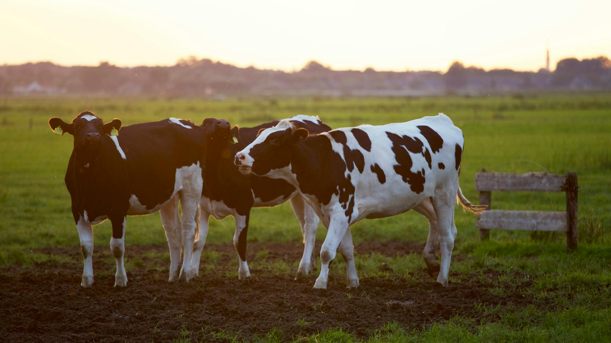

Welcome to Cattle-Care AI! your AI-powered solution for early detection of Lumpy Skin Disease (LSD) in cattle. Our innovative web application leverages advanced machine learning models to analyze images and provide accurate predictions, helping farmers and veterinarians safeguard their livestock from this contagious and potentially devastating disease.
Accuracy and Reliability:
Ease of Use:
Data Privacy and Security:
Efficiency and Cost-Effectiveness::